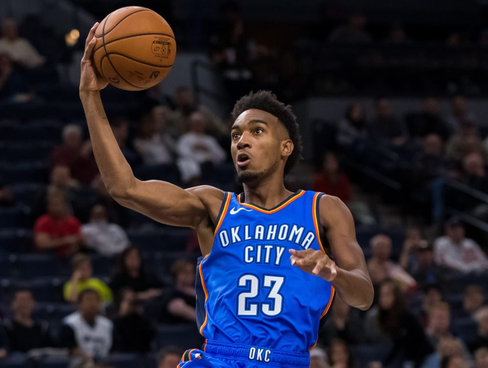

Acquisitions

The Sixers are trading Al Horford and a first-round and second-round pick to the Thunder for Danny Green, sources tell ESPN. - per WOJ

The Sixers are sending a lightly-protected 2025 first-round pick and the 34th overall pick in tonight's draft, sources tell ESPN. The Thunder are also sending Terrance Ferguson to the Sixers with Green. - per WOJ